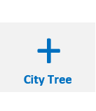
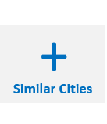

option={
legend: {data:[city_name],top:'5%'},
series: [
{
name:city_name,
type:'line',
zlevel:2,
data:[boxplot_raw_data[0][0],raw_data[1][0],raw_data[2][0],raw_data[3][0]]
},
{
name: 'boxplot',
type: 'boxplot',
data: box_plot_data.boxData,
tooltip: {
formatter: function (param) {
return [
'Experiment ' + param.name + ': ',
'upper: ' + param.data[5],
'Q3: ' + param.data[4],
'median: ' + param.data[3],
'Q1: ' + param.data[2],
'lower: ' + param.data[1]
].join('
')
}
}
},
{
name: 'outlier',
type: 'scatter',
data: box_plot_data.outliers
}
]
}
option = {
title: [
{
text: 'Statistics of 20 nearest cities',
left: 'center',
},
{
text: 'upper: Q3 + 1.5 * IRQ \nlower: Q1 - 1.5 * IRQ',
borderColor: '#999',
borderWidth: 1,
textStyle: {
fontSize: 14
},
left: '10%',
top: '90%'
}
],
legend: {data:['Shanghai'],top:'5%'},
tooltip: {
trigger: 'item',
axisPointer: {
type: 'shadow'
}
},
grid: {
left: '10%',
right: '10%',
bottom: '15%'
},
xAxis: {
type: 'category',
data: ['1975','1990','2000','2015'],
boundaryGap: true,
nameGap: 30,
splitArea: {
show: false
},
axisLabel: {
formatter: '{value}'
},
splitLine: {
show: false
}
},
yAxis: {
type: 'value',
name: 'persons',
splitArea: {
show: true
}
},
series: [
{
name:'Shanghai',
type:'line',
zlevel:2,
data:[shanghai_raw_data[0][0],shanghai_raw_data[1][0],shanghai_raw_data[2][0],shanghai_raw_data[3][0]]
},
{
name: 'boxplot',
type: 'boxplot',
data: box_plot_data.boxData,
tooltip: {
formatter: function (param) {
return [
'Experiment ' + param.name + ': ',
'upper: ' + param.data[5],
'Q3: ' + param.data[4],
'median: ' + param.data[3],
'Q1: ' + param.data[2],
'lower: ' + param.data[1]
].join('
')
}
}
},
{
name: 'outlier',
type: 'scatter',
data: box_plot_data.outliers
}
]
};
if (option && typeof option === "object") {
myChart.setOption(option, true);
}
if (option && typeof option === "object") {
myChart.setOption(option, true);
};
`
ID:
None
Name:
None
Country:
None
Type:
None
ID Name Country Type
None
None
None
None
None
None
None
None
None
function getColor(d) {
return d == 1 ? '#55AA55' :
d == 2 ? '#33CC33' :
d == 3 ? '#97F709' :
d == 4 ? '#EEEE11' :
d == 5 ? '#EE9611' :
d == 6 ? '#F73809' :
d == 7 ? '#1F2629' :
'#FFEDA0';
}
grades = [1,2,3,4,5,6,7],
type = ['萌芽型','佝偻型','成长型','膨胀型','成熟型','区域型','衰退型'],



City Tree
var city_icon = L.marker([39.61, -105.02]);
var cities = L.layerGroup([city_icon]);
var city_icon = L.marker([39.61, -105.02]);
var cities = L.layerGroup([city_icon]);
var overlayMaps = {
"Cities": cities
};
L.control.layers(overlayMaps).addTo(map);